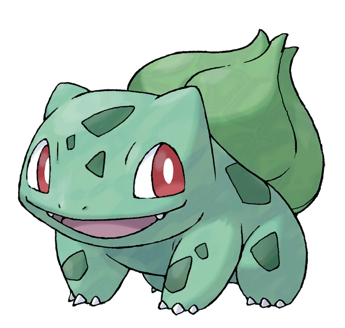
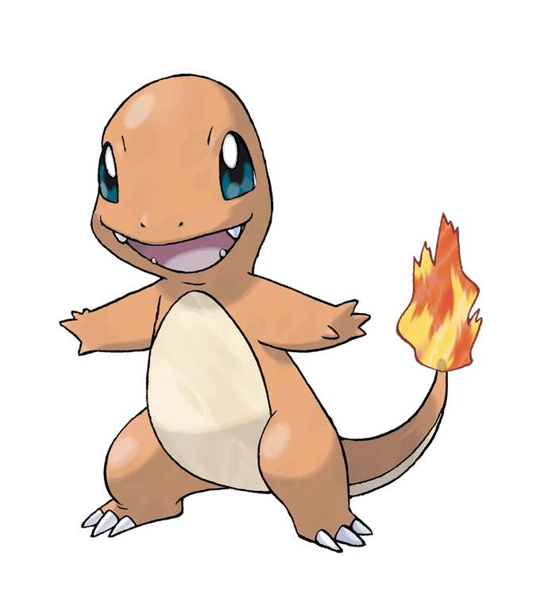
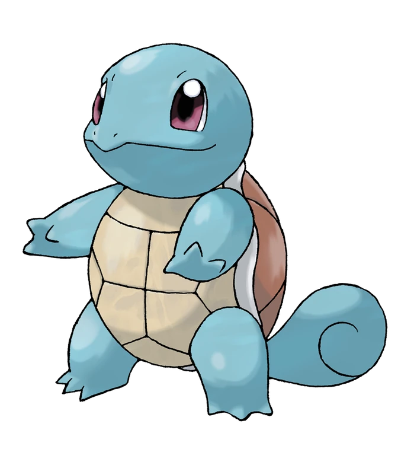
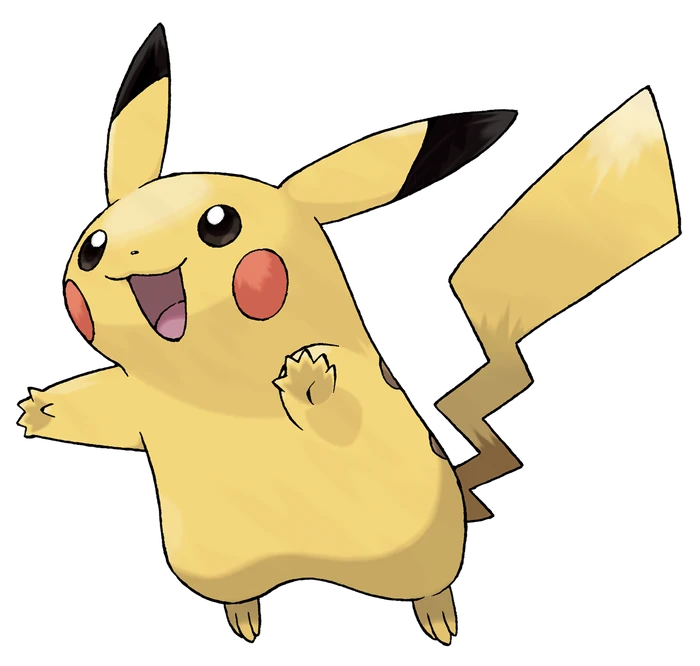

Generation I A
| ID |
Name |
| 001 |
Bulbasaur |
|

|
| Type |
| Grass |
Poison |
| Born Moves |
| Tackle |
Growl |
|
Bulbasaur resembles a small amphibian/frog,
but it bears three claws on each of its feet and has no tail.
It also has large, red eyes and small, sharp teeth.
Its skin is a light, turquoise color with dark, green spots.
It has three claws on all four of its legs.
Its most notable feature, however, is the aforementioned bulb on its back,
which according to its entry in the Pokédex, was planted there at birth.
|
Generation I B
| ID |
Name |
| 004 |
Charmander |
|

|
| Type |
| Fire |
/ |
| Born Moves |
| Scratch |
Growl |
|
Charmander is a bipedal, reptilian Pokémon with a primarily orange body and blue eyes.
Its underside from the chest down and the soles of its feet are cream-colored.
It has two small fangs visible in its upper jaw and two smaller fangs in its lower jaw.
A fire burns at the tip of this Pokémon's slender tail and has blazed there since Charmander's birth.
The flame can be used as an indication of Charmander's health and mood,
burning brightly when the Pokémon is strong, weakly when it is exhausted,
wavering when it is happy, and blazing when it is enraged. It is said that Charmander dies if its flame goes out.
However, if the Pokémon is healthy, the flame will continue to burn even if it gets a bit wet and is said to steam in the rain.
|
Generation I C
| ID |
Name |
| 007 |
Squirtle |
|

|
| Type |
| Water |
/ |
| Born Moves |
| Tackle |
Tail Whip |
|
Squirtle is a small, light-blue Pokémon with an appearance similar to a turtle.
With its aerodynamic shape and grooved surface, Squirtle's shell helps it wade through the water very quickly.
It also offers protection in battle. Like turtles,
Squirtle has a shell that covers its body with holes that allow its limbs, tail, and head to be exposed.
Unlike a turtle, Squirtle is ordinarily bipedal.
|
Generation I D
| ID |
Name |
| 025 |
Pikachu |
|

|
| Type |
| Electric |
/ |
| Born Moves |
| Thunder Shock |
Growl |
|
Pikachu are small, and cute mouse-like Pokémon.
They are almost completely covered by yellow fur.
They have long yellow ears that are tipped with black.
A Pikachu's back has two brown stripes, and its large tail is notable for being shaped like
a lightning bolt, yet its brown tip is almost always forgotten.
Pikachu have short arms with five tiny fingers on forehands and three sharp fingers on their hind legs.
On its cheeks are two circle-shaped red pouches used for storing electricity.
They turn yellow and spark with electricity when it's about to use an Electric attack, such as Thunderbolt.
It has also been known to generate small surges of electrical energy in anger or for protection, like in the anime.
|